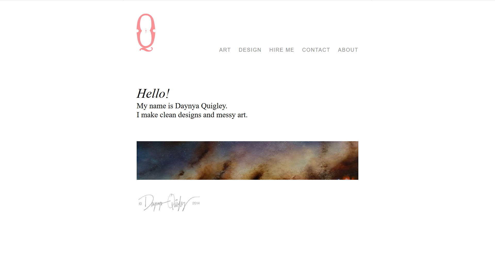

Gulf Stream Website

Screenshot of Gulf Stream homepage.
Development of website for Gulf Stream Asset Management
Ever-evolving development of my personal portfolio site. This is my playground. This is where I like to test new ideas, try out new designs, and showcase the projects I have been working on.
In lieu of social media, I would like for this totake on the role of a constantly updated personal journal. I'm not on social media, so I'd like this to be a place where people can connect with me, if they so desire.

Current
The current version of my site is taking it back to basics. I felt like the previous version was a bit too focused on design, so I wanted to pare it down and focus on what is currently important to me - development. I also get bored of seeing the same design and wanted to look at something more inline with my current aesthetic preferences. I used CSS Grid and Flexbox for the main layout of the site. I incorporated Signal for the templating engine. I focused on white space and clean typography, because, well, that's what I'm into. I wanted an easy to navigate site that shows off my work and my style.
June, 2019
The previous version of my site added a few new details. The design was similar to the the version before it, but the functionality and usability got some upgrades. I used JavaScript to swap the images based on the screen width. I changed the style of the homepage upon screen resizing. I added a "What's new" page that I plan to use as a journal.
Early 2019
In 2019, I was in the mood for a total overhaul, so I took things in a whole new direction. I made the site brighter, cleaner, and better organized. I found a portfolio site that I really liked, and wanted to mimic their overall look. To accomplish this, I used a blocky grid layout with a fully responsive portfolio grid finally put in place.
2018
After a few years of learning new tricks, my site needed an update. I kept the same general feel, but wanted to use a better grid layout, and a more responsive design. I revamped the layout with Bootstrap, which was a much more efficient alternative to what I had done previously.
2014
Completed as my first serious project, this version was created to showcase my portfolio of graphic design and artwork. I used basic HTML and CSS to build this site.